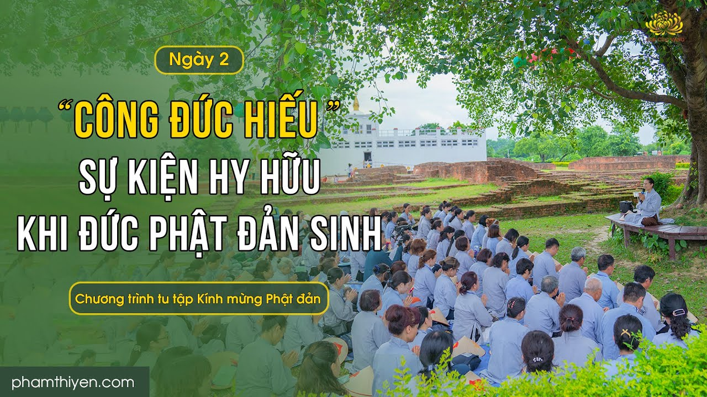

![[Video] Công đức nhiễu tháp](../media.phamthiyen.com/files/news/2025/05/17/clb-la-hau-la-vui-don-ngay-quoc-te-thieu-nhi-164745.jpg)
Bà-la-môn này gặp Phật, liền vui mừng, nhiễu Phật một vòng với tâm thanh tịnh. Nhờ công đức ấy, từ nay đến hai mươi lăm kiếp về sau, ông ta không bị đọa vào đường ác
Chi tiết[Video] Vườn Ông Cấp Cô Độc - Nơi Đức Phật an cư 24 năm | Hành hương Ấn Độ 2023
Tịnh xá Kỳ Viên là nơi Đức Phật trải qua nhiều mùa an cư nhất (24 mùa an cư) và cũng tại nơi đây, Đức Phật thuyết vô lượng Pháp. Tịnh xá Kỳ Viên nằm ở thành Xá Vệ thuở xưa, thuộc bang Uttar Pradesh, Ấn Độ ngày nay.
Chi tiết![[Video] Tâm bất động khi giao tiếp của bậc Thánh cư sĩ - Pháp vi diệu thứ bảy của cư sĩ Ugga Phật tử cần học](../media.phamthiyen.com/files/news/2025/04/18/tam-bat-dong-khi-giao-tiep-cua-bac-thanh-cu-si--phap-vi-dieu-thu-bay-cua-cu-si-ugga-phat-tu-can-hoc-160928.jpg)
Thưa Tôn giả, tuy vậy tâm tôi không có tự hào về nhân duyên ấy, nghĩa là: “Chư Thiên đến với ta, ta cùng nói chuyện với chư Thiên”
Chi tiết![[Video] Cách nghe Pháp, thuyết Pháp của bậc Thánh cư sĩ - Pháp vi diệu thứ 6 của cư sĩ Ugga Phật tử cần học](../media.phamthiyen.com/files/news/2025/04/18/cach-nghe-phap-thuyet-phap-cua-bac-thanh-cu-si--phap-vi-dieu-thu-6-cua-cu-si-ugga-phat-tu-can-hoc-155729.jpg)
Thưa Tôn giả, nếu Tôn giả ấy thuyết pháp cho tôi, tôi nghe hết sức cẩn thận, không phải không cẩn thận. Nếu Tôn giả ấy không thuyết pháp cho tôi, thời tôi thuyết pháp cho vị ấy.
Chi tiết![[Video] Đoạn tận năm hạ phần kiết sử - Pháp vi diệu thứ tám của cư sĩ Ugga Phật tử cần học](../media.phamthiyen.com/files/news/2025/04/18/nghi-thuc-chuyen-doi-ban-tho-bat-huong-151428.jpg)
[Video] Đoạn tận năm hạ phần kiết sử - Pháp vi diệu thứ tám của cư sĩ Ugga Phật tử cần học
Thưa Tôn giả, năm hạ phần kiết sử này được Thế Tôn thuyết giảng, tôi thấy rõ không có một pháp nào không được đoạn tận ở nơi tôi. Thưa Tôn giả, đây là pháp vi diệu, chưa từng có thứ tám, được có ở nơi tôi.
Chi tiết[Video] Vườn Lâm Tỳ Ni - Nơi Đức Phật đản sinh | Hành hương Ấn Độ
Lâm Tỳ Ni là một nơi linh thiêng đối với người con Phật, đánh dấu sự kiện trọng đại cho chúng sinh – đó là sự kiện Đức Phật đản sinh.
Chi tiết![[Video] Gieo nhân gì để được tâm tướng nhu hòa, dịu dàng?](../media.phamthiyen.com/files/news/2025/02/18/gieo-nhan-gi-de-duoc-tam-tuong-nhu-hoa-diu-dang-215256.jpg)
[Video] Gieo nhân gì để được tâm tướng nhu hòa, dịu dàng?
Một là đã mắc tội mà được phát lồ thì quyết không che giấu, dốc xa lìa lỗi lầm. Hai là lời nói phải chân thật, thà mất ngôi vua, hủy hoại sự giàu sang...
Chi tiết![[Video] Sự cao quý của Pháp khất thực - Tôn giả Ca Diếp cứu mẹ thoát địa ngục](../media.phamthiyen.com/files/news/2025/02/18/su-cao-quy-cua-phap-khat-thuc--ton-gia-ca-diep-cuu-me-thoat-dia-nguc-215542.jpg)
[Video] Sự cao quý của Pháp khất thực - Tôn giả Ca Diếp cứu mẹ thoát địa ngục
Nàng thấy rõ ràng Tôn giả muốn giúp nàng, bèn cúng dường Tôn giả miếng cơm cháy của mình... Nàng từ trần ngay đêm ấy và được tái sanh vào hội chúng Hóa Lạc thiên
Chi tiết[Video] Tuần lễ thứ nhất sau khi Đức Phật thành đạo - suy niệm về 12 nhân duyên
… Rồi Đức Phật nói về tuần thứ nhất sau khi Ngài chứng đắc Vô thượng Bồ-đề tại cội cây Bồ-đề. Khi Đức Thế Tôn mới thành đạo,
Chi tiết![[Video] Cách phụng sự Tỳ-kheo của bậc Thánh cư sĩ - Pháp vi diệu thứ 5 của cư sĩ Ugga Phật tử cần học](../media.phamthiyen.com/files/news/2024/10/22/cach-phung-su-ty-kheo-cua-bac-thanh-cu-si-202749.jpg)
Quán tưởng việc làm phụng sự tứ sự cẩn thận của cư sĩ Ugga đối với các thầy Tỳ Kheo: đồ ăn uống, dược phẩm trị bệnh, y áo, vật dụng vừa đủ, chỗ ở tu tập.
Chi tiết![[Video] Cách phân chia tài sản của bậc Thánh cư sĩ - Pháp vi diệu thứ 4 của cư sĩ Ugga Phật tử cần học](../media.phamthiyen.com/files/news/2024/10/22/cach-phan-chia-tai-san-cua-bac-thanh-cu-si-phap-vi-dieu-thu-4-202314.jpg)
Thưa Tôn giả, có những tài sản ở trong gia đình tôi, chúng được phân chia giữa những người có giới và những người tốt lành.
Chi tiết![[Video] Sự giao thoa giữa dòng nhân quả cũ và dòng nhân quả mới](../media.phamthiyen.com/files/news/2024/09/30/sinh-nhat-2-tuoi-y-nghia-cua-nguoi-con-phat-095805.jpg)
[Video] Sự giao thoa giữa dòng nhân quả cũ và dòng nhân quả mới
Nhận biết sự giao thoa giữa nhân quả cũ và nhân quả mới ở tại những tư tưởng, cảm xúc, tư duy, tranh đấu của bản thân khi đứng trước một việc - để xem nên hướng tới điều thiện hay điều ác.
Chi tiết![[Video] Tâm xả ái của bậc Thánh cư sĩ - Pháp vi diệu thứ ba của cư sĩ Ugga Phật tử cần học](../media.phamthiyen.com/files/news/2024/10/22/tam-xa-ai-cua-bac0-thanh-cu-si-phap-vi-dieu-thu-ba-cua-cu-si-ugga-phat-tu-can-hoc-203354.jpg)
[Video] Tâm xả ái của bậc Thánh cư sĩ - Pháp vi diệu thứ ba của cư sĩ Ugga Phật tử cần học
Thưa Tôn giả, từ khi bỏ người vợ trẻ, tâm tôi không có một chút đổi khác. Thưa Tôn giả, đây là pháp vi diệu, chưa từng có thứ ba, được có ở nơi tôi...
Chi tiết[Video] Tâm nhu thuận của bậc Thánh cư sĩ - Pháp vi diệu thứ hai của cư sĩ Ugga Phật tử cần học
Thưa Tôn giả, tám pháp vi diệu chưa từng có mặt này. Nhưng tôi không biết Thế Tôn đã nói tôi thành tựu tám pháp vi diệu chưa từng có này.
Chi tiết[Video] Tâm được tịnh tín với Đức Phật - Pháp vi diệu thứ nhất của cư sĩ Ugga Phật tử cần học
Ta đã nói gia chủ U-ga người Tỳ-xá-ly thành tựu tám pháp vi diệu chưa từng có này. Này Tỷ-kheo, hãy thọ trì rằng gia chủ U-ga, người Tỳ-xá-ly, được thành tựu tám pháp vi diệu chưa từng có này.
Chi tiết![[Video] Công đức nhớ nghĩ về Pháp - Pháp tăng thượng tâm thứ hai](../media.phamthiyen.com/files/news/2024/07/23/tang-thuong-tam-ve-phap-cua-duc-phat--phap-tang-thuong-tam-thu-2-074550.jpg)
[Video] Công đức nhớ nghĩ về Pháp - Pháp tăng thượng tâm thứ hai
Đức Phật thuyết như vậy, Tôn giả Xá-lợi-phất, chư Tỳ-kheo, cư sĩ Cấp Cô Độc và năm trăm Ưu-bà-tắc sau khi nghe lời Phật dạy, hoan hỷ phụng hành.
Chi tiết[Video] “Nước tắm từ hư không” sự kiện hy hữu khi Đức Phật đản sinh
Khi Bồ-tát từ bụng mẹ sanh ra, này A Nan, hai dòng nước từ hư không hiện ra, một dòng lạnh, một dòng nóng. Hai dòng nước ấy tắm rửa sạch sẽ cho Bồ-tát và cho bà mẹ.
Chi tiết[Video] Sự kiện hy hữu "Chư Thiên nâng đỡ" khi Đức Phật đản sinh
Khi Bồ-tát từ bụng mẹ sanh ra, chư Thiên đỡ lấy Ngài trước, sau mới đến loài người”, bạch Thế Tôn là một hy hữu, một vị tằng hữu của Thế Tôn
Chi tiết[Video] Tri ân sự đản sinh cao quý của Đức Phật vì lòng bi mẫn cho tất cả chúng sinh
Sự xuất hiện của Đức Phật: Là con người duy nhất xuất hiện trên thế gian chỉ vì một mục đích duy nhất là lợi ích cho số đông, lợi ích, cứu khổ cho muôn loài.
Chi tiết
[Video] “Công đức hiếu” sự kiện hy hữu khi Đức Phật đản sinh
“Sau khi sanh Bồ-tát bảy ngày, này A Nan, mẹ Bồ-tát mệnh chung và sanh lên cõi trời Đâu-suất.” Vì rằng, bạch Thế Tôn, con thọ trì sự việc này, bạch Thế Tôn, là một hy hữu, một vị tằng hữu của Thế Tôn…
Chi tiếtTỳ-kheo các ông! Đã có thể trụ yên nơi giới rồi, nên chế ngự năm căn, chớ để phóng dật, chạy theo năm dục...
Chi tiết[Video] Tháp Trà Tỳ - Nơi hỏa táng Đức Phật sau khi Ngài nhập Niết Bàn | Hành hương Ấn Độ
Các Thánh tích vô cùng quan trọng để khẳng định rằng: Đức Phật đã xuất hiện, đản sinh, xuất gia, thành đạo, thuyết Pháp và nhập diệt ở đời.
Chi tiết[Video] Giữ giới những việc không được làm - kinh Di Giáo | Tu quán niệm ngày Đức Phật nhập Niết Bàn
Giới luật chính là thuận theo gốc của giải thoát, cho nên gọi là tùy thuận giải thoát. Nhờ nương theo giới luật mà sanh ra các môn thiền định và trí huệ diệt khổ
Chi tiết[Video] Đền Đại Niết Bàn - Nơi Đức Phật Nhập Niết Bàn | Hành hương Ấn Độ
Đền Đại Niết Bàn - Nơi Đức Phật Nhập Niết Bàn | Hành hương Ấn Độ
Chi tiết[Video] Nơi cội Bồ đề Đức Thế Tôn thành đạo - Cảm niệm ân đức của Ngài để tinh tấn tu tập
Nếu như không niệm được ân Đức Phật thì không thể giải thoát được. Bởi không thấy được tình thương của Ngài thì sẽ không cố gắng tu tập.
Chi tiết[Video] Tâm Bồ đề - Biến ác duyên thành đại duyên thù thắng | Trạch Pháp ngày 20/11/Quý Mão
Một hôm trên núi Linh-Thứu thuộc thành Vương-Xá trong pháp hội Pháp-Hoa, đức Phật đã tuyên bố thọ ký cho những đồ đệ có căn trí cao sâu vào thời tương lai sẽ chứng đạo quả Vô-thượng Bồ-đề.
Chi tiết[Video] Đức tính cần có để được làm thị giả của Đức Phật | Trạch Pháp ngày 3/11/Quý Mão
Đức tính cần có để được làm thị giả của Đức Phật
Chi tiết[Video] Giải đáp thắc mắc: Tu tập và hồi hướng như thế nào để tự tại trước vô thường
Hàng ngày hướng tới rèn sửa tâm thì được hoàn toàn tự tại trước khi chết.
Chi tiết[Video] Phương pháp phòng chống dịch bệnh - Nhân duyên của 5 anh em ông Kiều Trần Như với Đức Phật
Phương pháp phòng chống dịch bệnh - Nhân duyên của 5 anh em ông Kiều Trần Như với Đức Phật
Chi tiết